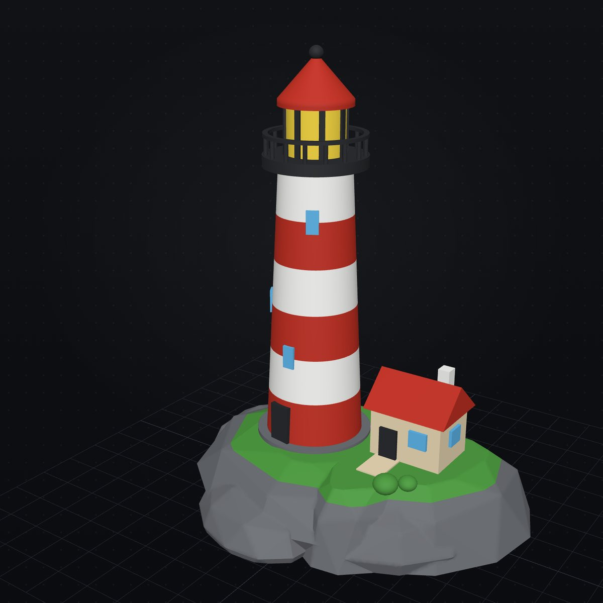
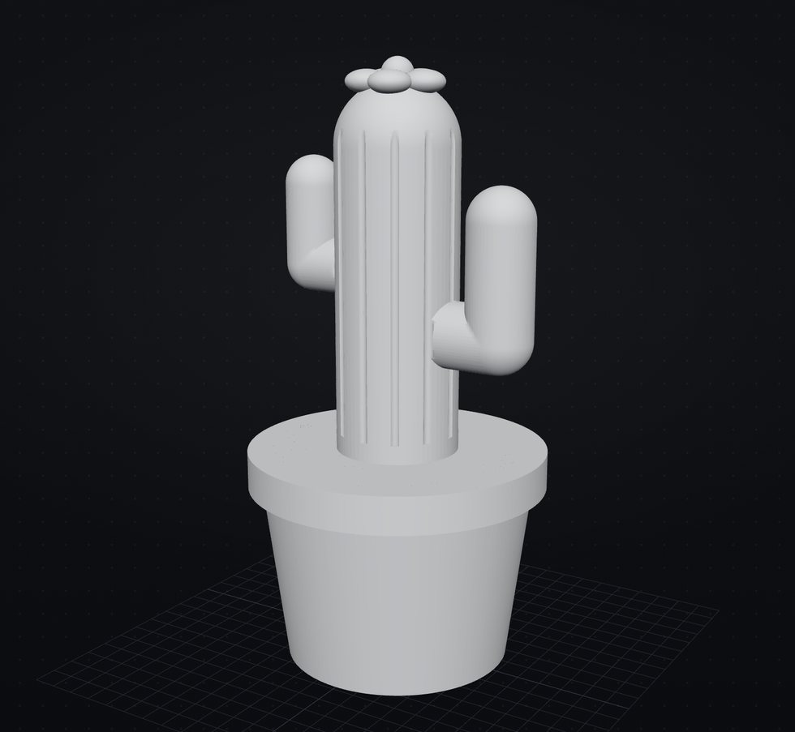
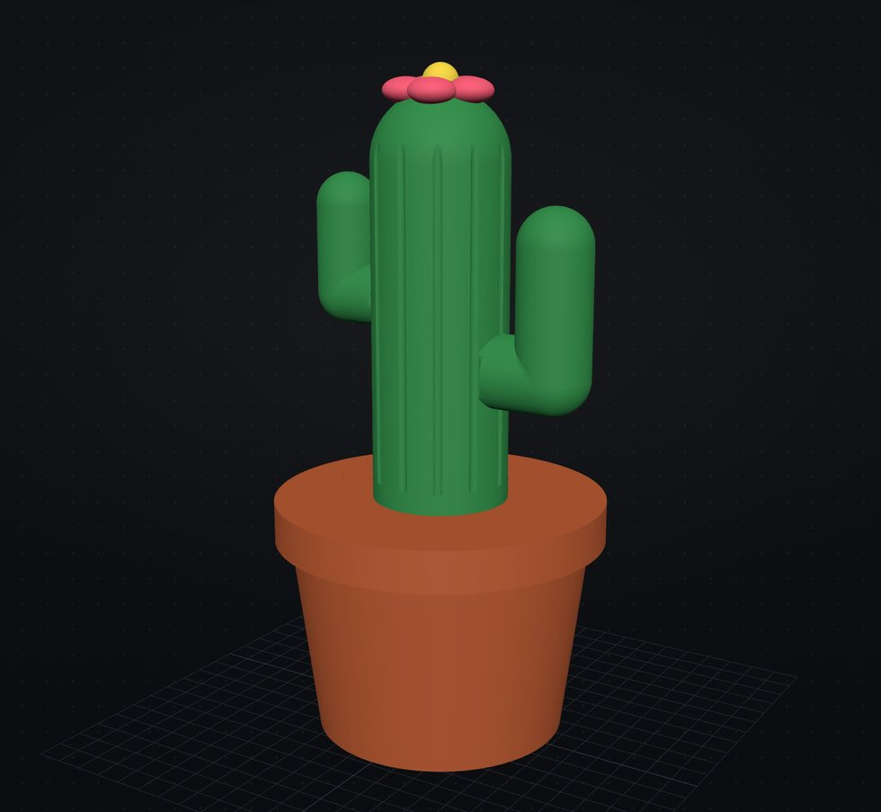
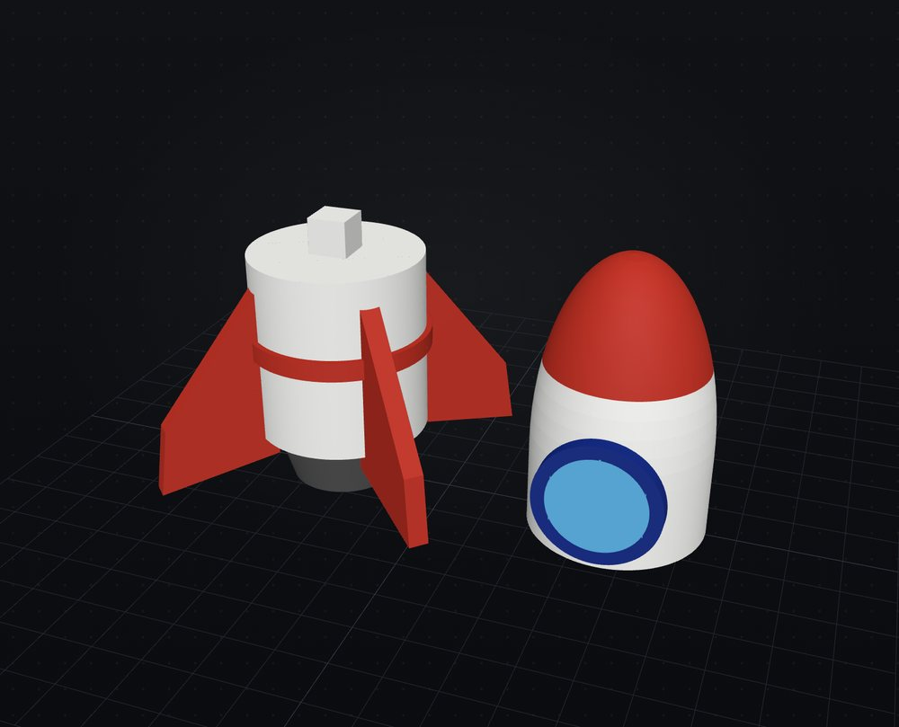

Color that stays where you put it
Brush, eraser and a smart fill that stops at sharp edges, so a hull stays a hull and a cabin stays a cabin. Smooth the edges, mirror across any axis.
Free web editor for multicolor 3D printing
STLware is the step your slicer is missing. Open any model, plain or already painted, paint it in minutes, cut it to fit your plate, and export a 3MF that opens with every color already assigned.
No accountFiles stay on your computerBambu Studio · OrcaSlicer · PrusaSlicer

01 · The problem
You bought a printer that changes filament on its own. Then you download a model, and the colors from the photo are nowhere in the file.
Most models on MakerWorld, Printables and Thingiverse are a plain STL. You get the shape. The color is up to you.
Fill spills onto the next surface, large meshes lag on every stroke, and detailed parts end up painted triangle by triangle.
Learn Blender over a weekend, or pay someone to prepare every file. Neither is why you bought the printer.
02 · The solution
STLware does one job and does it well: it gets a model ready for multicolor printing. Open it, put color exactly where you want it, export. Your slicer takes it from there.


03 · How it works
Drop an STL, 3MF or OBJ. Plain or already painted, small or 700k triangles.
Smart fill colors a whole surface and stops at sharp edges. Mirror strokes across X, Y or Z. Too big for the plate? Cut it.
Save the 3MF, open it in your slicer, match each color to a filament slot and press print.
04 · Features
Brush, eraser and a smart fill that stops at sharp edges, so a hull stays a hull and a cabin stays a cabin. Smooth the edges, mirror across any axis.
Open a painted 3MF from Bambu Studio, OrcaSlicer or PrusaSlicer, or an OBJ with colors. Every color loads as it was. Repaint one part, add a new color, swap blue for green, then export again.
Rice grain or car-sized import, fixed instantly.
A 3MF with one filament per color. Opens in Bambu Studio, OrcaSlicer and PrusaSlicer, ready to map to your slots. Up to 16 colors per model.
Drag a cutting plane through the model. STLware adds square pegs on one side and matching holes on the other, with your tolerance, so the parts snap back together.

05 · Privacy
STLware works inside your browser. The model is never sent to a server, and there is no account. Unreleased designs and models you paid for stay on your machine.
06 · Try it
Drop it here and the editor opens with your model. It takes about as long as reading this sentence.
No model handy? Paint a #3DBenchy
07 · FAQ
Yes. No account, no watermark, no export limit.
Nowhere. Your browser opens and processes the model on your own computer. It is never sent to a server, so private and unreleased designs are safe.
Yes. Open a painted 3MF or a colored OBJ and its colors load exactly as they were. Change what you need and export a new 3MF.
The painted 3MF opens in Bambu Studio, OrcaSlicer and PrusaSlicer. So it works with Bambu Lab printers with one or more AMS units, Prusa printers with an MMU, and any multicolor printer those slicers support. Up to 16 colors per model.
It opens, but painting a 3D model needs a mouse and a bigger screen. Use a computer for the best result.
Use the "Found a bug?" button in the editor or write to bug@stlware.com. A screenshot and the model, if you can share it, help a lot.
What should STLware do next?Every message gets read. Write to hello@stlware.com
hello@stlware.com